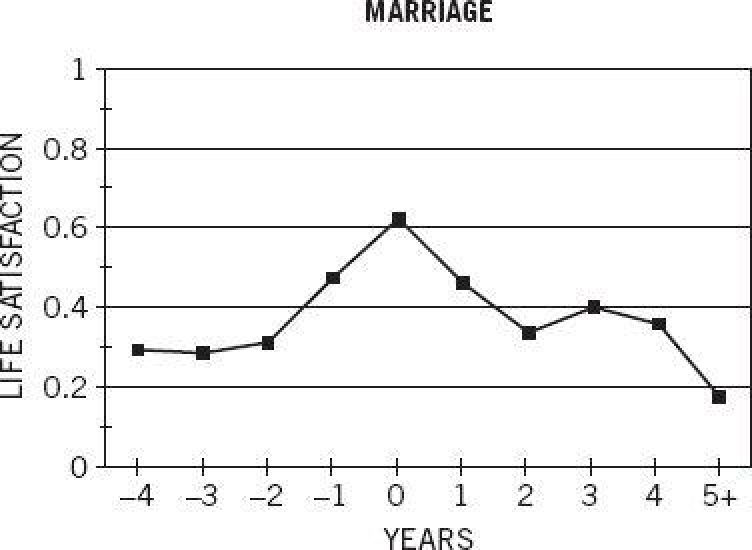

Figure 16 is taken from an analysis by Andrew Clark, Ed Diener, and Yannis Georgellis of the German Socio-Economic Panel, in which the same respondents were asked every year about their satisfaction with their life. Respondents also reported major changes that had occurred in their circumstances during the preceding year. The graph shows the level of satisfaction reported by people around the time they got married.

Figure 16
The graph reliably evokes nervous laughter from audiences, and the nervousness is easy to understand: after all, people who decide to get married do so either because they expect it will make them happier or because they hope that making a tie permanent will maintain the present state of bliss. In the useful term introduced by Daniel Gilbert and Timothy Wilson, the decision to get married reflects, for many people, a massive error of affective forecasting. On their wedding day, the bride and the groom know that the rate of divorce is high and that the incidence of marital disappointment is even higher, but they do not believe that these statistics apply to them.
The startling news of figure 16 is the steep decline of life satisfaction. The graph is commonly interpreted as tracing a process of adaptation, in which the early joys of marriage quickly disappear as the experiences become routine. However, another approach is possible, which focuses on heuristics of judgment. Here we ask what happens in people’s minds when they are asked to evaluate their life. The questions “How satisfied are you with your life as a whole?” and “How happy are you these days?” are not as simple as “What is your telephone number?” How do survey participants manage to answer such questions in a few seconds, as all do? It will help to think of this as another judgment. As is also the case for other questions, some people may have a ready-made answer, which they had produced on another occasion in which they evaluated their life. Others, probably the majority, do not quickly find a response to the exact question they were asked, and automatically make their task easier by substituting the answer to another question. System 1 is at work. When we look at figure 16 in this light, it takes on a different meaning.
The answers to many simple questions can be substituted for a global evaluation of life. You remember the study in which students who had just been asked how many dates they had in the previous month reported their “happiness these days” as if dating was the only significant fact in their life. In another well-known experiment in the same vein, Norbert Schwarz and his colleagues invited subjects to the lab to complete a questionnaire on life satisfaction. Before they began that task, however, he asked them to photocopy a sheet of paper for him. Half the respondents found a dime on the copying machine, planted there by the experimenter. The minor lucky incident caused a marked improvement in subjects’ reported satisfaction with their life as a whole! A mood heuristic is one way to answer life-satisfaction questions.
The dating survey and the coin-on-the-machine experiment demonstrated, as intended, that the responses to global well-being questions should be taken with a grain of salt. But of course your current mood is not the only thing that comes to mind when you are asked to evaluate your life. You are likely to be reminded of significant events in your recent past or near future; of recurrent concerns, such as the health JghtA5 alth Jght of a spouse or the bad company that your teenager keeps; of important achievements and painful failures. A few ideas that are relevant to the question will occur to you; many others will not. Even when it is not influenced by completely irrelevant accidents such as the coin on the machine, the score that you quickly assign to your life is determined by a small sample of highly available ideas, not by a careful weighting of the domains of your life.
People who recently married, or are expecting to marry in the near future, are likely to retrieve that fact when asked a general question about their life. Because marriage is almost always voluntary in the United States, almost everyone who is reminded of his or her recent or forthcoming marriage will be happy with the idea. Attention is the key to the puzzle. Figure 16 can be read as a graph of the likelihood that people will think of their recent or forthcoming marriage when asked about their life. The salience of this thought is bound to diminish with the passage of time, as its novelty wanes.
The figure shows an unusually high level of life satisfaction that lasts two or three years around the event of marriage. However, if this apparent surge reflects the time course of a heuristic for answering the question, there is little we can learn from it about either happiness or about the process of adaptation to marriage. We cannot infer from it that a tide of raised happiness lasts for several years and gradually recedes. Even people who are happy to be reminded of their marriage when asked a question about their life are not necessarily happier the rest of the time. Unless they think happy thoughts about their marriage during much of their day, it will not directly influence their happiness. Even newlyweds who are lucky enough to enjoy a state of happy preoccupation with their love will eventually return to earth, and their experienced well-being will again depend, as it does for the rest of us, on the environment and activities of the present moment.
In the DRM studies, there was no overall difference in experienced well-being between women who lived with a mate and women who did not. The details of how the two groups used their time explained the finding. Women who have a mate spend less time alone, but also much less time with friends. They spend more time making love, which is wonderful, but also more time doing housework, preparing food, and caring for children, all relatively unpopular activities. And of course, the large amount of time married women spend with their husband is much more pleasant for some than for others. Experienced well-being is on average unaffected by marriage, not because marriage makes no difference to happiness but because it changes some aspects of life for the better and others for the worse.
One reason for the low correlations between individuals’ circumstances and their satisfaction with life is that both experienced happiness and life satisfaction are largely determined by the genetics of temperament. A disposition for well-being is as heritable as height or intelligence, as demonstrated by studies of twins separated at birth. People who appear equally fortunate vary greatly in how happy they are. In some instances, as in the case of marriage, the correlations with well-being are low because of balancing effects. The same situation may be good for some people and bad for others, and new circumstances have both benefits and costs. In other cases, such as high income, the effects on life satisfaction are generally positive, but the picture is complicated by the fact that some people care much more about money than others do.
A large-scale study of the impact of higher education, which was conducted for JghtA5 aor Jghtanother purpose, revealed striking evidence of the lifelong effects of the goals that young people set for themselves. The relevant data were drawn from questionnaires collected in 1995–1997 from approximately 12,000 people who had started their higher education in elite schools in 1976. When they were 17 or 18, the participants had filled out a questionnaire in which they rated the goal of “being very well-off financially” on a 4-point scale ranging from “not important” to “essential.” The questionnaire they completed twenty years later included measures of their income in 1995, as well as a global measure of life satisfaction.
Goals make a large difference. Nineteen years after they stated their financial aspirations, many of the people who wanted a high income had achieved it. Among the 597 physicians and other medical professionals in the sample, for example, each additional point on the money-importance scale was associated with an increment of over $14,000 of job income in 1995 dollars! Nonworking married women were also likely to have satisfied their financial ambitions. Each point on the scale translated into more than $12,000 of added household income for these women, evidently through the earnings of their spouse.
The importance that people attached to income at age 18 also anticipated their satisfaction with their income as adults. We compared life satisfaction in a high-income group (more than $200,000 household income) to a low- to moderate-income group (less than $50,000). The effect of income on life satisfaction was larger for those who had listed being well-off financially as an essential goal: .57 point on a 5-point scale. The corresponding difference for those who had indicated that money was not important was only .12. The people who wanted money and got it were significantly more satisfied than average; those who wanted money and didn’t get it were significantly more dissatisfied. The same principle applies to other goals—one recipe for a dissatisfied adulthood is setting goals that are especially difficult to attain. Measured by life satisfaction 20 years later, the least promising goal that a young person could have was “becoming accomplished in a performing art.” Teenagers’ goals influence what happens to them, where they end up, and how satisfied they are.
In part because of these findings I have changed my mind about the definition of well-being. The goals that people set for themselves are so important to what they do and how they feel about it that an exclusive focus on experienced well-being is not tenable. We cannot hold a concept of well-being that ignores what people want. On the other hand, it is also true that a concept of well-being that ignores how people feel as they live and focuses only on how they feel when they think about their life is also untenable. We must accept the complexities of a hybrid view, in which the well-being of both selves is considered.
The Focusing Illusion
We can infer from the speed with which people respond to questions about their life, and from the effects of current mood on their responses, that they do not engage in a careful examination when they evaluate their life. They must be using heuristics, which are examples of both substitution and WYSIATI. Although their view of their life was influenced by a question about dating or by a coin on the copying machine, the participants in these studies did not forget that there is more to life than dating or feeling lucky. The concept of happiness is not suddenly changed by finding a dime, but System 1 readily substitutes a small part of it for the whole of it. Any aspect of life to which attention is directed will loom JghtA5 aoom Jght large in a global evaluation. This is the essence of the focusing illusion, which can be described in a single sentence:
Nothing in life is as important as you think it is when you are thinking about it.
The origin of this idea was a family debate about moving from California to Princeton, in which my wife claimed that people are happier in California than on the East Coast. I argued that climate is demonstrably not an important determinant of well-being—the Scandinavian countries are probably the happiest in the world. I observed that permanent life circumstances have little effect on well-being and tried in vain to convince my wife that her intuitions about the happiness of Californians were an error of affective forecasting.
A short time later, with this debate still on my mind, I participated in a workshop about the social science of global warming. A colleague made an argument that was based on his view of the well-being of the population of planet Earth in the next century. I argued that it was preposterous to forecast what it would be like to live on a warmer planet when we did not even know what it is like to live in California. Soon after that exchange, my colleague David Schkade and I were granted research funds to study two questions: Are people who live in California happier than others? and What are the popular beliefs about the relative happiness of Californians?
We recruited large samples of students at major state universities in California, Ohio, and Michigan. From some of them we obtained a detailed report of their satisfaction with various aspects of their lives. From others we obtained a prediction of how someone “with your interests and values” who lived elsewhere would complete the same questionnaire.
As we analyzed the data, it became obvious that I had won the family argument. As expected, the students in the two regions differed greatly in their attitude to their climate: the Californians enjoyed their climate and the Midwesterners despised theirs. But climate was not an important determinant of well-being. Indeed, there was no difference whatsoever between the life satisfaction of students in California and in the Midwest. We also found that my wife was not alone in her belief that Californians enjoy greater well-being than others. The students in both regions shared the same mistaken view, and we were able to trace their error to an exaggerated belief in the importance of climate. We described the error as a focusing illusion.
The essence of the focusing illusion is WYSIATI, giving too much weight to the climate, too little to all the other determinants of well-being. To appreciate how strong this illusion is, take a few seconds to consider the question:
How much pleasure do you get from your car?
An answer came to your mind immediately; you know how much you like and enjoy your car. Now examine a different question: “When do you get pleasure from your car?” The answer to this question may surprise you, but it is straightforward: you get pleasure (or displeasure) from your car when you think about your car, which is probably not very often. Under normal circumstances, you do not spend much time thinking about your car when you are driving it. You think of other things as you drive, and your mood is determined by whatever you think about. Here again, when you tried to rate how much you enjoyed your car, you actually answered JghtA5 aed Jghta much narrower question: “How much pleasure do you get from your car when you think about it?” The substitution caused you to ignore the fact that you rarely think about your car, a form of duration neglect. The upshot is a focusing illusion. If you like your car, you are likely to exaggerate the pleasure you derive from it, which will mislead you when you think of the virtues of your current vehicle as well as when you contemplate buying a new one.
A similar bias distorts judgments of the happiness of Californians. When asked about the happiness of Californians, you probably conjure an image of someone attending to a distinctive aspect of the California experience, such as hiking in the summer or admiring the mild winter weather. The focusing illusion arises because Californians actually spend little time attending to these aspects of their life. Moreover, long-term Californians are unlikely to be reminded of the climate when asked for a global evaluation of their life. If you have been there all your life and do not travel much, living in California is like having ten toes: nice, but not something one thinks much about. Thoughts of any aspect of life are more likely to be salient if a contrasting alternative is highly available.
People who recently moved to California will respond differently. Consider an enterprising soul who moved from Ohio to seek happiness in a better climate. For a few years following the move, a question about his satisfaction with life will probably remind him of the move and also evoke thoughts of the contrasting climates in the two states. The comparison will surely favor California, and the attention to that aspect of life may distort its true weight in experience. However, the focusing illusion can also bring comfort. Whether or not the individual is actually happier after the move, he will report himself happier, because thoughts of the climate will make him believe that he is. The focusing illusion can cause people to be wrong about their present state of well-being as well as about the happiness of others, and about their own happiness in the future.
What proportion of the day do paraplegics spend in a bad mood?
This question almost certainly made you think of a paraplegic who is currently thinking about some aspect of his condition. Your guess about a paraplegic’s mood is therefore likely to be accurate in the early days after a crippling accident; for some time after the event, accident victims think of little else. But over time, with few exceptions, attention is withdrawn from a new situation as it becomes more familiar. The main exceptions are chronic pain, constant exposure to loud noise, and severe depression. Pain and noise are biologically set to be signals that attract attention, and depression involves a self-reinforcing cycle of miserable thoughts. There is therefore no adaptation to these conditions. Paraplegia, however, is not one of the exceptions: detailed observations show that paraplegics are in a fairly good mood more than half of the time as early as one month following their accident—though their mood is certainly somber when they think about their situation. Most of the time, however, paraplegics work, read, enjoy jokes and friends, and get angry when they read about politics in the newspaper. When they are involved in any of these activities, they are not much different from anyone else, and we can expect the experienced well-being of paraplegics to be near normal much of the time. Adaptation to a new situation, whether good or bad, consists in large part of thinking less and less about it. In that sense, most long-term circumstances of life, including paraplegia and marriage, are part-time states that one inhabits only when one at JghtA5 a at Jghttends to them.
One of the privileges of teaching at Princeton is the opportunity to guide bright undergraduates through a research thesis. And one of my favorite experiences in this vein was a project in which Beruria Cohn collected and analyzed data from a survey firm that asked respondents to estimate the proportion of time that paraplegics spend in a bad mood. She split her respondents into two groups: some were told that the crippling accident had occurred a month earlier, some a year earlier. In addition, each respondent indicated whether he or she knew a paraplegic personally. The two groups agreed closely in their judgment about the recent paraplegics: those who knew a paraplegic estimated 75% bad mood; those who had to imagine a paraplegic said 70%. In contrast, the two groups differed sharply in their estimates of the mood of paraplegics a year after the accidents: those who knew a paraplegic offered 41% as their estimate of the time in that bad mood. The estimates of those who were not personally acquainted with a paraplegic averaged 68%. Evidently, those who knew a paraplegic had observed the gradual withdrawal of attention from the condition, but others did not forecast that this adaptation would occur. Judgments about the mood of lottery winners one month and one year after the event showed exactly the same pattern.
We can expect the life satisfaction of paraplegics and those afflicted by other chronic and burdensome conditions to be low relative to their experienced well-being, because the request to evaluate their lives will inevitably remind them of the life of others and of the life they used to lead. Consistent with this idea, recent studies of colostomy patients have produced dramatic inconsistencies between the patients’ experienced well-being and their evaluations of their lives. Experience sampling shows no difference in experienced happiness between these patients and a healthy population. Yet colostomy patients would be willing to trade away years of their life for a shorter life without the colostomy. Furthermore, patients whose colostomy has been reversed remember their time in this condition as awful, and they would give up even more of their remaining life not to have to return to it. Here it appears that the remembering self is subject to a massive focusing illusion about the life that the experiencing self endures quite comfortably.
Daniel Gilbert and Timothy Wilson introduced the word miswanting to describe bad choices that arise from errors of affective forecasting. This word deserves to be in everyday language. The focusing illusion (which Gilbert and Wilson call focalism) is a rich source of miswanting. In particular, it makes us prone to exaggerate the effect of significant purchases or changed circumstances on our future well-being.
Compare two commitments that will change some aspects of your life: buying a comfortable new car and joining a group that meets weekly, perhaps a poker or book club. Both experiences will be novel and exciting at the start. The crucial difference is that you will eventually pay little attention to the car as you drive it, but you will always attend to the social interaction to which you committed yourself. By WYSIATI, you are likely to exaggerate the long-term benefits of the car, but you are not likely to make the same mistake for a social gathering or for inherently attention-demanding activities such as playing tennis or learning to play the cello. The focusing illusion creates a bias in favor of goods and experiences that are initially exciting, even if they will eventually lose their appeal. Time is neglected, causing experiences that will retain their attention value in the long term to be appreciated less than they deserve to be.
Time and Time Again
The role of time has been a refrain in this part of the book. It is logical to describe the life of the experiencing self as a series of moments, each with a value. The value of an episode—I have called it a hedonimeter total—is simply the sum of the values of its moments. But this is not how the mind represents episodes. The remembering self, as I have described it, also tells stories and makes choices, and neither the stories nor the choices properly represent time. In storytelling mode, an episode is represented by a few critical moments, especially the beginning, the peak, and the end. Duration is neglected. We saw this focus on singular moments both in the cold-hand situation and in Violetta’s story.
We saw a different form of duration neglect in prospect theory, in which a state is represented by the transition to it. Winning a lottery yields a new state of wealth that will endure for some time, but decision utility corresponds to the anticipated intensity of the reaction to the news that one has won. The withdrawal of attention and other adaptations to the new state are neglected, as only that thin slice of time is considered. The same focus on the transition to the new state and the same neglect of time and adaptation are found in forecasts of the reaction to chronic diseases, and of course in the focusing illusion. The mistake that people make in the focusing illusion involves attention to selected moments and neglect of what happens at other times. The mind is good with stories, but it does not appear to be well designed for the processing of time.
During the last ten years we have learned many new facts about happiness. But we have also learned that the word happiness does not have a simple meaning and should not be used as if it does. Sometimes scientific progress leaves us more puzzled than we were before.
Speaking of Thinking About Life
“She thought that buying a fancy car would make her happier, but it turned out to be an error of affective forecasting.”
“His car broke down on the way to work this morning and he’s in a foul mood. This is not a good day to ask him about his job satisfaction!”
“She looks quite cheerful most of the time, but when she is asked she says she is very unhappy. The question must make her think of her recent divorce.”
“Buying a larger house may not make us happier in the long term. We could be suffering from a focusing illusion.”
“He has chosen to split his time between two cities. Probably a serious case of miswanting.”
P